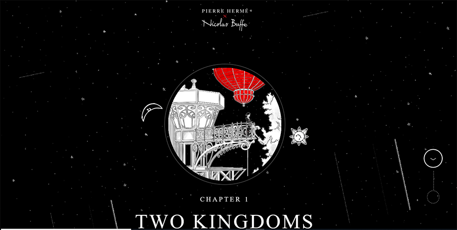

A Story of the Kingdoms
of the Moon and of the Sun

This website provides you a great experience through an exclusive interactive adventure to be part of a digital story, “A Story of the Kingdoms of the Moon and of the Sun” where you can be the narrator. It is great animation website for children. This is an innovative storybook of this generation displayed in a website designed by French artists, Pierre Hermé x Nicolas Buffe. They published the site in 2016. The story offers such amazing illustrations to imagine a universe combining ancestral myths, manga culture, Renaissance and Baroque art altogether. Everything is art in this website even the loading session is an illustration. The typography is also great as it matches the theme of the story. The illustrations are not just plain 2D drawings but are interactive and animated making it more interesting. The story introduces its characters with illustrations and the plot in every page is short and simple. It gives you an immersive experience and the story is easy to follow as the drawings shows actions as well. You can also choose different language between English, Japanese and French. You can start the story in just one click of “Start the Adventure” button. There is a button you can drag to continue the story and it there is a guide pointing you to that button to easily navigate the website. On the upper left-hand corner, there is a three-bar icon where you can see all chapters. The story is not yet finish as chapters 2 and 3 haven’t been published yet. But I was amazed by this interactive design when I tried it. The only problem here is it does not work on mobile screens but only on desktop but resizing is not a problem even if you drag it to its smallest size, it will still retain its graphic and animation.